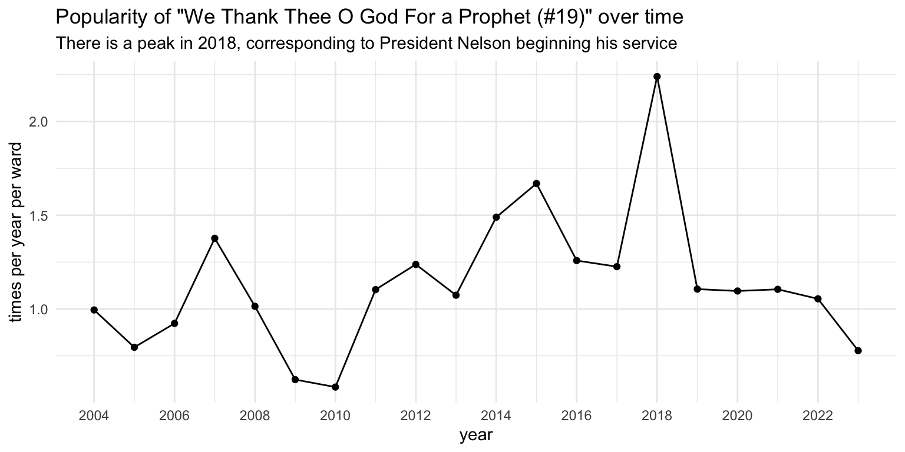

What hymns have recently gotten more or less popular?
frequency
general
Are hymns equally popular from year to year? Are there hymn that have been increasing or decreasing in popularity? Were there events that triggered a sudden spike in a particular hymn? In this post, I highlight a couple trends over time.
I should start off by pointing out a major caveat. As I illustrate here, I do have data from almost every Sunday from April 2002 through now, but it is quite inconsistent. Most of it comes from 2015–2017, with 2017 having by far the most out of any other year, thanks to Samuel Bradshaw’s project data that he generously shared with me. So, I’m hesitant to make any strong claims about the gradual increase or decrease of hymns over time. But I’ll present the data anyway and let you make conclusions.
The way I’ll track changes over time is pretty simple. For each hymn, I’ll count tally up the number of meetings it occurs in that year in my dataset. To offset the problem of vastly different amounts of data from year to year, I’ll then take that number and divide it by the total number of meetings I have data from for that year. Essentially, I’m taking the proportion of meetings the hymn is sung in from year to year. To convert it into numbers that are more interpretable, I’ll then multiply that proportion by 48 to get an estimate of how many times per year a ward might sing that hymn. I’ll then plot those numbers over time. I won’t show too many plots here though because it would quickly bog down the post.
General changes over time
Hymns that might becoming less popular
First, I’ll start off by identifying the handful of hymns that might be getting less popular over the past few years, with some potential interpretation.
First,
Other hymns follow the same pattern of a recent drop, but we can’t really attribute it to their length. For example,
For some reason, family-related hymns are less popular than they used to be.
As I’ll discuss again below,
Hymns that are becoming more popular
There are relatively few hymns that show an increase over time. Part if this may be because some wards are singing intermediate hymns less regularly as they used to since switching to two-hour church (see below), so some of the less popular ones end up getting sung less often. This means that some of the more well-known ones are, proportionally, appearing to be sung more.
Over the past decade,
Other hymns have a more gradual uptick.
It’s not clear why these particular hymns appear to be gaining in popularity.
Hymns with more complex patterns
Three hymns have more complex patterns.
Hymns with noticeable spikes
Finally, and perhaps most interestingly to me, there were a few hymns that had very clear spikes that can be easily explained.
The other really cool one is that
Other hymns have spikes just as big, but I’m not sure why.
Covid disruptions
Perhaps the most noticeable pattern in the hymns that I looked at were the disruptions due to covid. In this section, I list these hymns, with some possible explanations for why they were impacted by lockdown.
Many sacrament hymns were proportionally more popular because some wards only sang those. The biggest spikes were in
Because the timing of covid lockdown happened in roughly the second quarter of the year, some hymns that are typically sung around that time had a noticeable drop in 2020. For example some Easter hymns like
Relatedly,
Other hymns had noticeable dips in 2020, and it’s not really clear why. For example, since 2004,
Others that were less common in 2020 include
However, it’s not all bad news. A few hymns were more popular in 2020 than in other years. These include
So, covid had apparent disruptions. Some can be explained because we were simply not in church during times of the year when particular hymns are typically sung. But, many other hymns were less common for one reason or another.
Change to two-hour church
Instead of looking at changes in individual hymns, one could ask whether there has been a change in the number of congregational hymns being sung. Specifically, since the switch from three-hour church to two-hour church, sacrament meetings are 10 minutes shorter. At least one person I talked to felt like the intermediate hymn has been cut more often because of that. Is that a more general trend?
In a previous post, I mentioned that the average number of congregational hymns per sacrament meeting is 3.47. That post was based on about a quarter of the amount of data that I have now, and the results are still pretty accurate. With my current dataset of 20,296 sacrament meetings, the average number of congregational hymns is 3.34, with a standard deviation of 0.673. However, that pools all data from all years. What are the differences from before and after the change?
As it turns out, the average number of congregational hymns before 2019 was 3.36 and the average in 2019 and later was 3.21. So a slight drop.
But wait! We had a pandemic since 2019. We were all in in lockdown and when wards resumed meetings, many did so in an abbreviated way and didn’t sing very many hymns, if any at all. So, we’ll have to treat the covid era differently. From what I can tell, wards were starting to shut down by around March 1, 2020 and it wasn’t until around January 2021 that they were back in person with all the hymns. This figure shows the average number of congregational hymns each month across the past 22 years or so, with key periods highlighted in different colors.
Warning: Removed 7 rows containing non-finite outside the scale range
(`stat_smooth()`).Warning: Removed 7 rows containing missing values or values outside the scale range
(`geom_point()`).There’s a lot to dissect here, so let me go through it from left to right:
- First, there’s more variability in the 2002–2008 range, and that’s mostly because I have less data so it’s a bit unstable.
- From about 2008 through 2017, the average number of hymns per meeting was pretty stable.
- In 2018 we actually see a bit of a dip. I actually don’t have a lot of data from the end of 2018, so some of the numbers are perhaps higher in real life than what they show here.
- Once we hit 2019, there appears to be a small uptick in the average number of hymns per sacrament meeting. Nothing completely out of the ordinary based on the previous decade, but perhaps slightly more on average.
- We then see the drastic jump as we enter covid lockdown, and the number of hymns drops preciptiously: very few wards were singing three hymns while meeting virtually. Most wards were back in person by October 2020, but in a limited way still and many were not singing all the hymns.
- By the beginning of 2021, it seems like most wards were back to at least three hymns a meeting again. However, the number of hymns was lower than before.
- It wasn’t until the beginning of 2023 that numbers reached their post-covid peak, which even then is slightly lower than pre-2017 numbers.
So, are we singing fewer hymns in two-hour church? It’s really hard to tell because of covid, but it looks like we might be just a little bit.